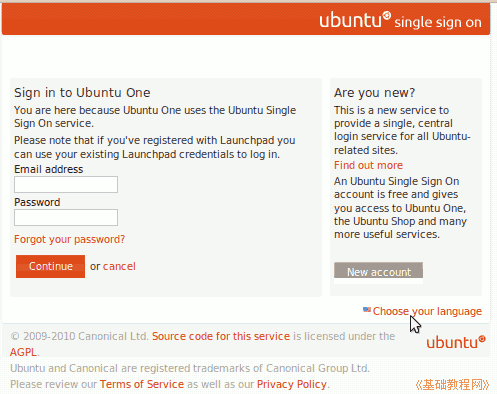

Ubuntu/GNOME 桌面程序指南
作者：TeliuTe 来源：基础教程网
七十二、Ubuntu One 返回目录 下一课使用它，您可以把自己的文件放在 Ubuntu服务器中，并且可以在多台电脑上同步，也可以共享它；
1、Ubuntu One
1）点菜单“应用程序 - 互联网 - Ubuntu One”，打开窗口，新版12.04的参考：http://teliute.org/linux/TeUbt/lesson11/lesson11.html
2）在右上角通知区域出来一个图标，第一次使用会打开一个登录页面；

3）点右下角的“choose your language”，在出来的页面选择 “简体中文”；
4）在出来的页面中，点“新建账号”，以后就用它来登录；
5）输入自己的邮箱和验证码，看不清点刷新换一个，然后点继续；
6）到自己的邮箱中，打开一封来自Ubuntu的邮件，点击验证链接，或复制验证码；
7）再输入自己的用户名和密码，点确定就完成了；
8）在出来的加入计算机页面中点 “Add This computer” 加入到 Ubuntu One 中；
9）这时通知区域显示连接上图标，可以上传自己的文件了；
10）在通知区域的图标上点右键，“打开目录”是打开本地的文件夹，“访问网页”是查看服务器中的文件；
11）点上边的 “Files”，进入自己的文件夹，其中 Files 是文件，Upload file 是上传，New folder 是新建文件夹，Share this folder 是共享这个文件夹；
本节学习了 Ubuntu One 的基础知识，如果你成功地完成了练习，请继续学习下一课内容；
本教程由86团学校TeliuTe制作|著作权所有
基础教程网：http://teliute.org/
美丽的校园……
转载和引用本站内容，请保留版权信息和本站链接。